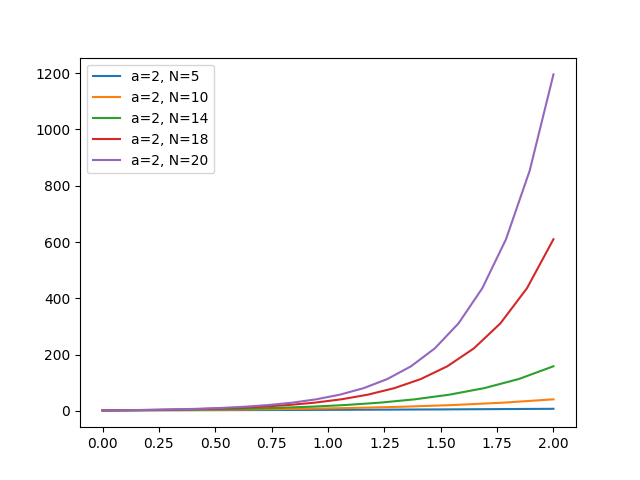

# Méthode d'Euler — Introduction
Résolution numérique d'équations différentielles — ISEN A1
---
## Introduction
Dans ce TP, vous allez implémenter la **méthode d'Euler explicite** pour résoudre numériquement une équation différentielle simple. L'objectif est de comprendre le principe de discrétisation du temps et d'observer l'influence du pas de calcul sur la précision du résultat.
> Cette méthode est fondamentale en calcul numérique : elle sert de brique de base à des méthodes plus avancées comme Runge-Kutta, que vous verrez dans le projet Planétarium.
---
## 1. Rappels théoriques
### Problème de Cauchy
On cherche à résoudre une équation différentielle de la forme :
$$\begin{cases} \dfrac{dy}{dt} = F(y(t), t) \text{\qquad \ avec\qquad } y(0) = y_0 \end{cases}$$
On ne cherche pas la solution analytique exacte, mais une **suite de valeurs approchées** de $y$ sur un intervalle $[0, T]$.
### Discrétisation
On divise l'intervalle $[0, T]$ en $N$ sous-intervalles de longueur $h$ : $h = \frac{T}{N}$.
On définit les instants $t_n = n \cdot h$ pour $n \in \{0, 1, \ldots, N\}$.
### Formule d'Euler explicite
L'idée centrale est d'approximer localement la courbe par sa **tangente** : $\boxed{y_{n+1} = y_n + h \cdot F(y_n, t_n)}$
À chaque pas, on utilise la dérivée au point courant pour avancer d'un pas $h$.
---
## 2. Application — Équation exponentielle
### Équation à résoudre
Pour ce TP, vous résolvez l'équation différentielle suivante :
$$\begin{cases} \dfrac{dy}{dt} = a \cdot y(t) \qquad y(0) = 1 \end{cases}$$
Ici, la fonction $F$ de la formule générale vaut simplement $F(y, t) = a \cdot y(t)$ : la dérivée de $y$ est proportionnelle à $y$ elle-même.
### Dérivation de la formule de récurrence
On part de la formule générale d'Euler : $y_{n+1} = y_n + h \cdot F(y_n, t_n)$
**Étape 1 — Substitution de $F$ :** on remplace $F(y_n, t_n)$ par $a \cdot y_n$ : $y_{n+1} = y_n + h \cdot a \cdot y_n$
**Étape 2 — Factorisation par $y_n$ :** les deux termes ont $y_n$ en facteur : $\boxed{y_{n+1} = y_n \cdot (1 + a \cdot h)}$
---
Cette formule est très simple à implémenter : pour passer d'un pas au suivant, il suffit de **multiplier par le facteur constant** $(1 + a \cdot h)$.
> **Exemple numérique** avec $a = 2$, $h = 0{,}2$, $y_0 = 1$ :
> - $y_1 = 1 \times (1 + 2 \times 0{,}2) = 1{,}4$
> - $y_2 = 1{,}4 \times 1{,}4 = 1{,}96$
> - $y_3 = 1{,}96 \times 1{,}4 = 2{,}744$
> - ...
On voit que la suite est une **suite géométrique** de raison $(1 + ah)$, ce qui est cohérent avec la solution exacte exponentielle.
### Solution analytique exacte
La solution exacte de cette équation est la fonction exponentielle : $y(t) = e^{a \cdot t}$
On peut le vérifier : $\dfrac{d}{dt}(e^{at}) = a \cdot e^{at} = a \cdot y(t)$ , et $y(0) = e^0 = 1$ .
La méthode d'Euler approche cette exponentielle par une suite géométrique. Pour de petits pas $h$, on a $e^{ah} \approx 1 + ah$, ce qui explique pourquoi l'approximation s'améliore quand $h$ diminue.
Vous tracerez cette courbe exacte pour la comparer à votre approximation numérique.
---
## 3. Travail demandé
L’objectif de cette partie est de **mettre en œuvre la méthode d’Euler** étudiée précédemment, puis de **comparer le résultat numérique** à la solution analytique exacte.
Vous ne devez pas simplement exécuter un programme : vous devez **comprendre le rôle de chaque paramètre**, et être capables d’expliquer le calcul effectué.
---
### Question 1 — Mise en place de la résolution numérique
On souhaite résoudre l’équation différentielle :
$$
\frac{dy}{dt} = a \cdot y(t) \qquad \text{avec} \qquad y(0) = 1
$$
sur l’intervalle de temps $[0, 2]$, à l’aide de la méthode d’Euler explicite.
Avant d’écrire la boucle de calcul, on définit un ensemble de **constantes numériques** utilisées dans le programme.
### Tableau des constantes utilisées
| Nom | Signification | Type | Unité |
|----|--------------|------|------|
| `interval_begin` | Début de l’intervalle de temps | réel | s |
| `interval_end` | Fin de l’intervalle de temps | réel | s |
| `a` | Coefficient de l’équation différentielle | réel | s⁻¹ |
| `N` | Nombre de pas de discrétisation | entier | — |
| `h` | Pas de temps (`(interval_end - interval_begin)/N`) | réel | s |
| `X` | Discrétisation de l’axe du temps | tableau de réels | s |
| `Y` | Valeurs approchées de la solution | tableau de réels | — |
L'intervale de temps peut être calculé via l'instruction :
```python
import numpy as np
X = np.linspace(interval_begin, interval_end, nb_step)
```
Expliquez :
- comment est calculé le pas de temps $h$
- pourquoi la condition initiale impose $Y[0] = 1$
La méthode d’Euler est implémentée par une **relation de récurrence** entre deux instants consécutifs :
$$
y_{n+1} = y_n \cdot (1 + a \cdot h)
$$
> **Question — Mise en œuvre du calcul et de l’affichage**
>
> Écrivez le code Python qui **complète cette partie graphique** afin de :
>
> - calculer les valeurs `Y` approchées de la solution à l’aide de la méthode d’Euler
> - afficher la courbe numérique obtenue sur le graphique
>
```python
import matplotlib.pyplot as plt
# Code ici
plt.plot(X, Y, label="Méthode d'Euler")
plt.xlabel("Temps t (s)")
plt.ylabel("Valeur y(t)")
plt.legend()
plt.show()
```
permet d'afficher une courbe Y selon le temps X.
---
### Question 2 — Comparaison avec la solution exacte
La solution analytique exacte de l’équation est :
$$
y(t) = e^{a \cdot t}
$$
Pour comparer la solution numérique et la solution exacte :
- on utilise une discrétisation fine de l’intervalle $[0, 2]$
- on calcule la valeur de $e^{a t}$ pour chaque instant
- on affiche les deux courbes sur un même graphique
On définit ensuite l’erreur numérique :
$$
e_n = |y(t_n) - y_n|
$$
> ### Décrire :
> - ce que mesure cette erreur
> - comment évolue l’erreur au cours du temps
> - pourquoi l’erreur n’est pas constante
---
### Question 3 — Analyse de l’influence du pas
> Le calcul précédent est reproduit pour plusieurs valeurs du nombre de pas $N$ : `5, 10, 14, 18, 20`.
>
> On affiche toutes les solutions numériques sur un même graphique.
> Que se passe t'il ?
---
## 4. Rapport à rendre
Votre rapport doit présenter :
- Le code Python utilisé avec des **commentaires**
- La **solution exacte** de l'équation
- Un graphique comparant solution exacte et méthode d'Euler
- Une analyse de l'**influence du pas** $h$
Le rapport est unique à chaque groupe. Toute copie de code sera sanctionnée. Vous devez être capable d'expliquer chaque ligne de votre code.
---
## Exemple d'affichage final

---
# Bon courage !